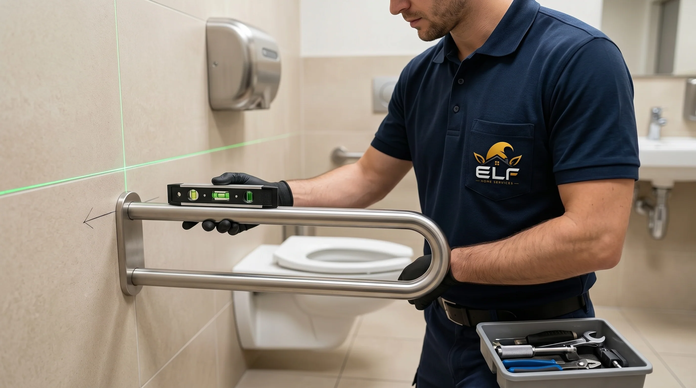

Faster risk reduction
Separate immediate safety and security needs from permanent repair scope.
When broken glass, water intrusion, storm damage, a security issue, or a safety hazard threatens operations, ELF Commercial moves fast to secure, stabilize, document, and plan the permanent repair.
For emergency commercial repairs, success is measured by stabilization-first triage, clear documentation, minimal interruption, and whether the permanent fix prevents a repeat ticket.
Separate immediate safety and security needs from permanent repair scope.
Capture the photos and notes ownership, insurance, and property teams need.
Move from temporary stabilization to a practical repair plan.
Final emergency commercial repairs scope depends on access rules, operating hours, material availability, approval limits, hidden conditions, and whether a licensed specialist or permit path is needed.
Commercial emergency repair content needs to separate immediate safety stabilization from permanent repair planning, insurance notes, owner communication, and reopening decisions.
Broken doors, glass, water entry, storm openings, and trip hazards are prioritized by people safety, site security, active damage, and whether operations can continue.
Photos, time notes, affected areas, temporary measures, and recommended next steps help ownership, insurance, and managers understand the incident.
After the space is stable, ELF separates finish repairs from specialist-first electrical, plumbing, roof, structural, or environmental issues.
This page is intentionally focused on emergency commercial repairs, so the operating notes, triage cues, and closeout expectations are different from the rest of the commercial library.
People safety, access security, active water, broken openings, and trip hazards come before cosmetic repair or final pricing.
Time-stamped photos, temporary measures, affected areas, and next-step notes help ownership and insurance understand what happened.
Permanent repair should wait until the active source, specialist issue, or approval path is clear enough to avoid repeat work.
Classify the business, urgency, access window, scope, and location count. The console builds a response priority, planning range, downtime note, and dispatch-ready brief.
Commercial buyers do not buy repairs. They buy open doors, safer spaces, cleaner claims, and fewer operational interruptions.
The workflow below is specific to emergency commercial repairs: it names the first signal, the operating risk, the repair action, and the closeout note a manager actually needs.
Confirm people are safe and identify active hazards.
Secure access, reduce exposure, and protect operations.
Collect photos, notes, and owner-ready information.
Plan permanent work once the urgent risk is controlled.
These internal links point to adjacent commercial intents without repeating the full service library on every page.
Yes. ELF Commercial includes emergency triage for urgent commercial repair needs across DFW.
Safety hazards, security exposure, water intrusion, storm damage, broken access points, and issues that threaten opening or operations are typical emergency candidates.
Yes. ELF can stabilize first and then plan the permanent repair once the cause, access, materials, and approvals are clear.
 ResourceEmergency Handyman Service DFW | Same-Day Urgent Repairs | ELF Home Services
ResourceEmergency Handyman Service DFW | Same-Day Urgent Repairs | ELF Home ServicesSame-day emergency handyman service across Dallas-Fort Worth. Water damage, lockouts, storm damage, broken doors. 2-hour response in core area.
 CommercialELF Commercial | DFW Facility Maintenance, Repairs & Emergency Response
CommercialELF Commercial | DFW Facility Maintenance, Repairs & Emergency ResponseA commercial repair command center for DFW businesses: facility maintenance, tenant improvements, property managers, multi-location programs, retail, restaurant, office, flooring, ADA, drywall, painting, and emergency repairs.
 GuideStorm Damage Repairs North Texas | Fence, Drywall, Trim & Water Stains
GuideStorm Damage Repairs North Texas | Fence, Drywall, Trim & Water StainsNorth Texas storm damage repair guide for fences, exterior trim, water stains, drywall, doors, caulk, temporary protection, documentation, and repair sequencing.

CommercialADA Compliance Upgrades for Commercial Spaces in DFW | ELF CommercialCommercial ADA upgrade planning across DFW for access paths, restrooms, reach ranges, grab bars, thresholds, door hardware, signage, and practical compliance punch work.